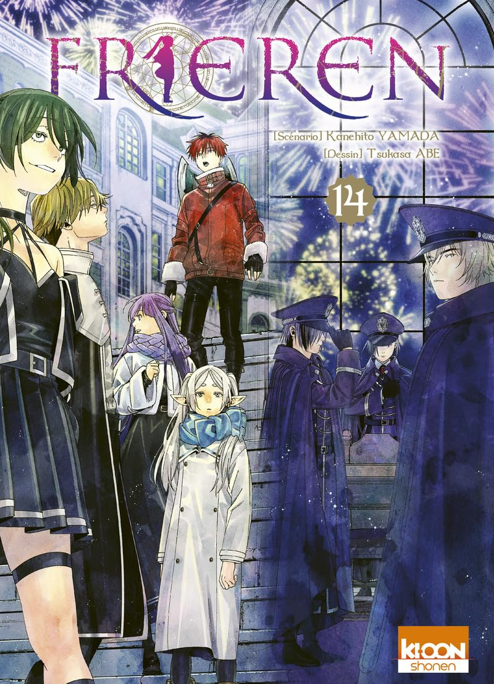

Dernières Actualités sur Frieren
Nouvelle saison de l'anime annoncée !
Publié le 05/07/25
Après avoir marqué les esprits fin 2023 avec un anime d'une grande qualité visuelle, Frieren fera prochainement son retour avec une deuxième saison, annoncée comme tout aussi soignée, émotive et poignante.
Un nouveau teaser vient d'être dévoilé, laissant entrevoir une production au niveau de la première saison. La diffusion est prévue pour janvier 2026.
Source
Sortie du tome 14 en France
Publié le 03/07/25
Voici ce qu'il nous réserve:
À peine arrivés à Eiseberg, la capitale, Frieren et ses compagnons sont appréhendés par Sense, qui a besoin de Fern pour une mission de la plus haute importance : elle et quatre autres mages de première catégorie doivent protéger Serie d'une tentative d'assassinat lors du grand bal organisé pour fêter la fondation de l'Empire !
Land et Übel sont déjà partis en reconnaissance et se sont infiltrés dans une soirée mondaine pour récupérer un précieux document laissé par Lineal, l'espionne de la société des mages du continent. Malheureusement, les services secrets magiques détectent vite leur présence et se lancent à leurs trousses ! Pendant ce temps, Frieren, en patrouille avec ses protégés, sent une menace peser sur elle...

Source